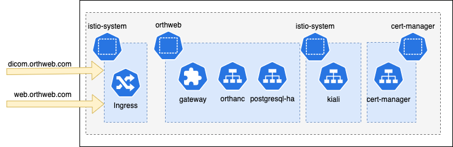

Manual approach
This instruction walks through the steps of manual deployment on an estabished Kubernetes cluster
Architecture
The deployment process will install Istio components, observability tools, cert manager, postgres database as well as the Orthanc workload. 
The ingress will take both web and DICOM traffic on different TCP ports.
Preparation
Ensure that the command terminal has kubectl that connects to the K8s cluster. We also need helm and istoctl to complete manual deployment.
Clone the repo and enter the manual directory in command terminal:
$ git clone git@github.com:digihunch/korthweb.git
$ cd helm/
Most of the artifacts are stored in manual directory.
Deployment
In the manual approach we take a few steps to install Istio and observability add-ons, configure certificates and then deploy Orthanc workload with database.
Istio and observability add-ons
We use istioctl to install istio with the operator manifest in istio directory:
istioctl install -f istio/istio-operator.yaml -y --verify
Then, we install observability addons and view Kiali dashboard (with istioctl or via port-forwarding):
kubectl apply -f https://raw.githubusercontent.com/istio/istio/master/samples/addons/jaeger.yaml
kubectl apply -f https://raw.githubusercontent.com/istio/istio/master/samples/addons/grafana.yaml
kubectl apply -f https://raw.githubusercontent.com/istio/istio/master/samples/addons/prometheus.yaml
kubectl apply -f https://raw.githubusercontent.com/istio/istio/master/samples/addons/kiali.yaml
istioctl dashboard kiali
kubectl port-forward svc/kiali -n istio-system 8080:20001
Kiali may take a few minutes to come up. Here we use a single manifest to deploy Kiali just for demo. For full-blown Kiali deployment, we should use Kiali CRD.
Configure Certificates
In this step, we generate our own X.509 key and certificate for the site. The certificates and key are stored as secrets and the Istio Ingress will reference them. To install cert manager using Helm:
helm install cert-manager cert-manager --namespace cert-manager --create-namespace --version v1.13.3 --repo https://charts.jetstack.io --set installCRDs=true
Confrim all Pods in cert-manager namespace come up. Then we use cert-manager CRs to create certificate in istio-system namespace, and verify the certificate by decoding the secret object.
kubectl apply -f certs.yaml
Deploy Orthanc workload
In the orthweb-cm.yaml file, we enable peer authentication and label orthweb namespace as requiring Istio sidecar injection. We also declare the config entry for orthanc.json and database init script. After that, we use Helm to install PostgreSQL database, which will use the init script.
kubectl apply -f orthweb-cm.yaml
helm install postgres-ha postgresql-ha \
--set postgresql.initdbScriptsCM=dbinit \
--set volumePermissions.enabled=true \
--set service.portName=tcp-postgresql \
--repo https://charts.bitnami.com/bitnami \
--version 12.3.3 \
--namespace orthweb
kubectl -n orthweb wait deploy/postgres-ha-postgresql-ha-pgpool --for=condition=Available --timeout=10m
kubectl apply -f orthanc.yaml
kubectl -n orthweb get po --watch
As a side note, we store the init script db_create.sql as an entry in orthanc-dbinit config map ahead of time before running the Helm chart, because Helm chart parameter pgpool.initdbScriptsCM does not take file with .sql extension. The postgres pods takes a few mintues to come all up. After that, we deploy the Orthanc workload as declared in orthanc.yaml file.